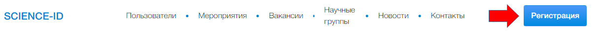
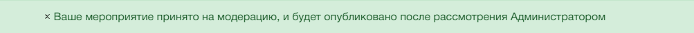
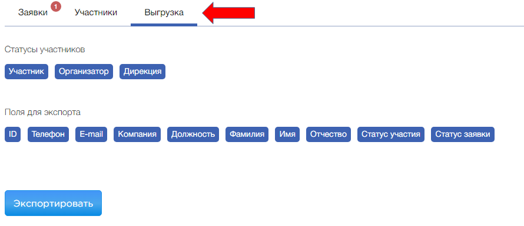
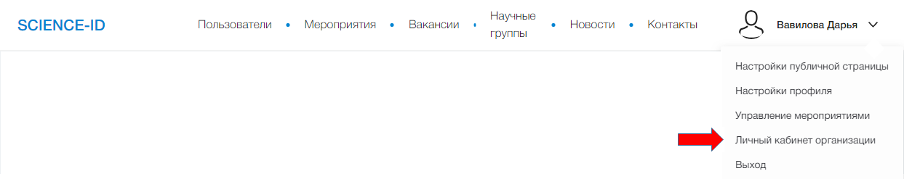

Помощь
Профиль
Регистрация аккаунта в качестве пользователя
Для полноценной работы с сайтом Science ID необходимо зарегистрироваться и заполнить свой профиль, указать место работы и место учебы, научную степень и звание, указать ссылки на идентификаторы РИНЦ и Scopus для отображения и обновления наукометрических показателей.
-
На любой странице сайте в правом верхнем нажимаем «Регистрация».
 -
Заполняем все поля и нажимаем «Создать аккаунт».
- Для пользователей Leader-ID можно пройти упрощенную регистрацию, нажав Зарегистрироваться с помощью LeaderID
-
Заполняем профиль данным о месте работы и учебы, данными о научной степени и должности.
-
Для заполнения данных профиля существует два раздела:
-
Настройки публичной страницы
- Заполнение данных в упрощенное форме
-
Настройки профиля
- Детальные настройки, включая настройки публичной страницы
-
Настройки публичной страницы
-
Для заполнения данных профиля существует два раздела:
- Для получения и обновления наукометрических показателей следует указать идентификаторы «Scopus AuthorID» и «SPIN РИНЦ» (в настройках публичной страницы).
Объединить профили
Если у Вас несколько профилей Science ID их возможно объединить по запросу.
Скрыть информацию из профиля
Возможно изменить в настройках приватности в разделе «Настройка конфиденциальности».
Отписаться от рассылок
Возможно изменение в разделе «Настройка конфиденциальности» или по ссылке в сообщениях от Science ID.
Мероприятия
Создание мероприятия
-
Находим пункт «Управление мероприятиями».

- Нажимаем «Создать мероприятие».
-
Заполняем все поля, пишем ключевые слова. Затем нажимаем «Сохранить». Вы должны увидеть такое сообщение.
 - Мероприятие становится доступным после модерации в течение 24 часов.
Управление мероприятием
- Заходим в «Управление мероприятиями»
-
Чтобы изменять и дополнять Ваше мероприятие следует нажать кнопку «Управление».

Там Вы можете редактировать мероприятие, посмотреть его статистику, список участников, менять форму для регистрации, создавать программу мероприятия, дополнительные информационные страницы и осуществлять рассылку по участникам мероприятия
После каждого внесения изменений в описание мероприятия следует проверка Администратора.
-
В разделе «Участники» Вы видите список зарегистрированных участников. Возможен просмотр списка в отдельном документе (выгрузка списков).
 - В разделе «Регистрация» возможна настройка полей формы для регистрации участников.
- В разделе «Программа» можно создать секции, указать временные промежутки, выбрать докладчиков. Все изменения отобразятся на странице мероприятия.
- Раздел «Рассылки» дает возможность оповещения зарегистрированных на мероприятия пользователей об изменениях или дополнениях к описанию.
Совместный доступ к редактированию мероприятия
Для того, чтобы добавить организатора мероприятия, новому организатору необходимо подать заявку на мероприятия в качестве участника (Добавить в календарь), а затем автору (создателю) мероприятия необходимо сообщить нам о назначение дополнительного организатора. Следует указать ID или ФИО в информационном письме.
Организация
Личный кабинет организации
-
Для получения доступа к личному кабинету организации. Необходимо зарегистрироваться на Science ID и затем на бланке организации сообщить о назначение Вас администратором организации на Science ID (указав Наименование организации, ФИО ответственного и его номер Science ID ).
Пример текста: Настоящим письмом подтверждаем, что Иванов Иван Иванович, зам. директора по научной части (Science ID 18181-100003) назначен Администратором организации Московский Государственный Университет в системе Science ID
-
Скан копию подписанного письма отправляем на почту
Ответ на запрос приходит в течение 24 часов. -
Находим пункт «Личный кабинет организации»
 - Через Личный кабинет есть возможность просматривать статистику по сотрудникам организации, редактировать списки сотрудников организации, создавать и управлять мероприятиям организации, создавать и управлять вакансиями организации
-
Раздел «Сотрудники».
- Нажать «Добавление сотрудника».
- Заполнить предложенные поля и выбрать сотрудника из списка пользователей Science ID. Добавленный сотрудник отобразится в списке.
Создание вакансии
- Во вкладке «Вакансии» нажимаем «Добавить вакансию».
- В окне заполняем все поля.
- Сразу после сохранения, вакансия приобретает статус «Опубликована».
-
После создания есть возможность удалить и редактировать вакансии. Для этого в разделе «Вакансии» следует выбрать пункты «Редактировать» или «Удалить».

Работа с соискателями
-
Отклики на вакансию видны в Личном кабинете организации. Там есть возможность принять или отклонить заявку соискателя.